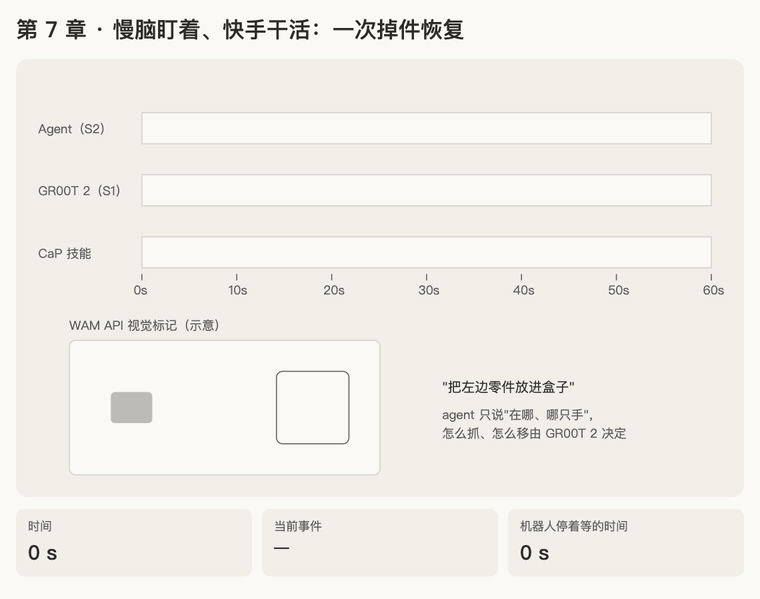

第 7 章 · Agentic GR00T 2：大模型当"慢脑"，GR00T 2 当"快手"
本章回答：长程任务会出错、会卡住、需要记忆，GR00T 2 自己扛不住时，怎么和一个前沿多模态 agent 分工？两者之间该传什么——语言，还是画在图上的点？
讲解日期：2026-11-15 · 上一章：第 6 章 RL 后训练 · 下一章：第 8 章 人形全身
对应原文：materials/text/gr00t2-whitepaper.txt§3.4 L624–L832；附录 G.1 L6032–L6253（Tab. 19 L6071）、G.2 L6254–L6555（Tab. 24 L6510）、G.3 L6556–L6588
本章缩写：S1 / S2 = System 1 / System 2（快系统 / 慢系统，借自卡尼曼的"快思考、慢思考"）；CaP = Code-as-Policy（代码 / 即 / 策略）；MCP = Model Context Protocol（模型 / 上下文 / 协议）；WAM API = WAM Application Programming Interface（WAM 的 / 应用 / 编程 / 接口）；DAgger = Dataset Aggregation（数据集 / 聚合）；SFT = Supervised Fine-Tuning（监督 / 微调）。全部缩写见 附录 · 缩写与术语表
讲解
第一步：谁管"做什么"、谁管"怎么做"（2026-11-15）
类比：工地上的工长和老师傅。 工长（agent，S2）看图纸、排工序、检查质量、出了问题叫人返工，但自己拧不好螺丝；老师傅（GR00T 2，S1）手上功夫好，但不看整张图纸、也记不住半小时前干了什么（只有 0.8 s 历史）。
白皮书的分工（L625–L628）：agent 决定 what to do——拆解长任务、监控进度、写代码；GR00T 2 决定 how to do it——做难以写成脚本的接触式操作。
运行时架构（Fig. 6，附录 G.1 L6045–L6066）：
| 层 | 组件 | 作用 |
|---|---|---|
| Agent（S2） | 前沿多模态编码 agent + AGENTS.md（操作指南）+ SKILL.md（技能文档）+ task.md（阶段、成功标准、已知失败模式） |
observe → reason → act → verify 循环 |
| MCP Server | wam_act（带 prompt 执行 GR00T 2）、stop_wam；观测工具 get_image、get_robot_state、localize_object；CaP 原语 move_to_pose、move_to_joints、set_gripper；CaP 技能 drop_any_object、flip_tractor… |
把一切暴露成工具 |
| 执行后端 | WAM Server（GR00T 2）；CaP 提供方 SAM3（分割定位）、cuRobo（运动规划） | 单一控制 worker 协调，避免 GR00T 2 和 CaP 同时发冲突指令 |
| 环境 | 真机或仿真，关节 PD 控制 | — |
agent 帮 GR00T 2 的四种方式（L628–L636）：
| 方式 | 做什么 | 结果 |
|---|---|---|
| Augment（增强） | 需要记忆/推理的任务，agent 跑任务级程序，每个操作步调 GR00T 2 | 仿真榜 RoboCasa365、RoboDojo 第一 |
| Assist（协助） | 真机上 agent 盯着，零件掉了或卡住就用 CaP 修，再把控制权还给 GR00T 2 | 杂乱起始组装 97–98 / 100 |
| Guide（引导） | 用视觉目标通过 WAM API 引导（第二步） | 长程 1.7% → 53.3% |
| Improve（改进） | 研究 agent 发现 RL 配方（第 6 章 AutoRL） | — |
例子：真机杂乱起始的长程组装（Fig. 7a，每法 100 次，零件随手倒在桌上，需要人帮的算失败）：
| 方法 | 玩具飞机 | 玩具拖拉机 | Hot Wheels |
|---|---|---|---|
| SFT | 69 | 51 | 23 |
| SFT + DAgger | 84 | 71 | 78 |
| SFT + DAgger + Agent | 98 | 97 | 97 |
DAgger = 让策略跑、人在它出错处给纠正标注、把这些数据加回训练。三者叠加：预训练给广度，纠错数据补分布外状态，agent 补恢复。
例子：仿真榜（Tab. 19，RoboCasa365 平均成功率）：SFT 67.2 → +RL 72.4 → +Agent 81.8 → +RL+Agent 88.0（此前榜首 HexaShell 1.5 为 85.6）。
一句话：agent 管工序、检查和恢复，GR00T 2 管手上功夫；GR00T 2 仍是默认执行者，agent 只在需要时插手。
第二步：WAM API——在图上画点来"指路"（2026-11-15）
类比：给师傅指活，用手一指比说一长串话管用。 "把左边第二个绿色瓶子放进右边那个桶"——说起来绕，指一下就清楚。
接口设计（附录 G.2 L6260–L6280）：把 what and where 和 how 分开—— - agent 每一步给：哪只手（acting arm）+ 一个抓取点 + 一个释放点（某一路场景相机图像上的像素坐标）； - GR00T 2 自己决定抓取姿态、接近方式和中间的全部运动； - 点直接画在条件帧上而不是走单独输入：实心圆 = 抓取点，加号 = 释放点；颜色表示手（洋红 = 左手，青色 = 右手），只标正在动的那只手，只标当前帧。原因：GR00T 2 conditions strongly on fine visual details in its conditioning frames（L6263）。 - 训练：mid-train 让 GR00T 2 认这些标记；点的监督从已有演示的夹爪/手部状态自动生成，不需要额外人工标注或新演示（L719–L721）。
例子：效果（Fig. 8，等权平均的基准成功率）：
| 设定 | 短程（2 个基准） | 长程（3 个） |
|---|---|---|
| GR00T 2 + 原始任务指令 | 35.7 | 0.0 |
| GR00T 2 + agent 语言指导 | 44.2 | 1.7 |
| GR00T 2 + agent 语言 + 视觉标记 | 76.8 | 53.3 |
长程里最典型的：YAM 垃圾分类，没标记 0 / 20，有标记 17 / 20。
代价（Tab. 24，YAM 垃圾分类，中位数）：agent 每轮 7.5 s，而策略一次调用约 0.6 s；机器人有 38% 的时间停着等 agent；agent 费用每 episode 约 0.26 美元。
局限（L776–L832）：点只说"在哪"，不说"怎么"——侧放、倒、舀这类要求仍靠语言和 GR00T 2 自己的技能；更丰富的接口（6D 物体位姿、目标图像、可供性标记）是未来方向。
一句话：把"抓哪、放哪、哪只手"画成彩色标记直接贴在相机帧上，比纯语言指导强得多；代价是 agent 慢，机器人常在等。
第三步：可靠性的账——三种机制叠加（2026-11-15）
类比：安全的高空作业 = 熟练工人 + 安全绳 + 现场监理。 单靠哪一样都不够。
白皮书 §5 的第二条观察："Reliability comes from complementary mechanisms, not from pretraining alone."（L1626）
| 机制 | 补的是什么 | 本章 / 他章证据 |
|---|---|---|
| 预训练 | 广度：没见过的任务也会个大概 | 第 3 章零样本 40% |
| 纠错演示（DAgger）+ RL | 精度和接触 | 第 6 章 40–76% → 88–98%；本章 SFT → DAgger |
| Agent | 记忆、校验、恢复 | 本章 → 97–98% |
例子：重复插入（Fig. 7b，连续插 5 根网线 / 5 个充电器，20 次）：同一个 agent 框架下，把 SFT 策略换成 RL 后的策略——多网线 12/20 → 19/20，多充电器 2/20 → 20/20。agent 本身救不了"手上功夫不够"，RL 也救不了"顺序和恢复"。
还没解决的（§5 L1688、附录 G.3）：长程组装的 8 次失败里有 3 次是"螺丝没拧到底，GR00T 2 和 agent 都判断为完成"——验证细微物理状态仍是瓶颈；未来设想把部署中 agent 的纠正蒸馏回策略，形成自我改进闭环（G.3 L6556–L6588）。
一句话：97% 是预训练 + 纠错/RL + agent 三层叠出来的；下一道坎是"判断有没有真做完"。
动画演示：慢脑盯着、快手干活：一次掉件恢复

可交互版：animations/07-agent-loop.html（▶ 播放、→ 单步、↺ 从头开始；无参数，可单步（时间线是示意））
怎么看： 1. 三条泳道：agent、GR00T 2、CaP 技能；GR00T 2 是默认执行者（第一步）。 2. 发现掉件 → agent 思考（斜纹是机器人在等）→ stop_wam → CaP 捡回 → verify → 交还 GR00T 2。 3. 最后一帧是 WAM API 的画法：洋红实心圆 = 左手抓取点，加号 = 释放点（第二步）。
练习与作答记录
题 1（第一步 分工）：GR00T 2 只有 0.8 s 历史。举一个"必须交给 agent"的长程任务例子，说明是缺了哪种能力（记忆 / 校验 / 恢复）。
作答：（待作答）
题 2（第二步 接口）：为什么把点"画在图上"而不是作为两个坐标数字单独输入？结合 GR00T 2 是从视频生成模型初始化的这一点回答。
作答：（待作答）
题 3（第二步 代价）：YAM 垃圾分类带视觉标记的设定中，episode 中位时长 186 s、等 agent 占 38%。机器人大约有多少秒在等？如果 agent 每轮快一倍，粗略估一下 episode 能缩短多少？
作答：（待作答）
口诀
工长管工序，师傅管手艺；
抓点画圆放点叉，洋红左手青色右；
预训练给广度，纠错练精度，agent 兜底恢复。
本章复习卡片
G15、G16（练习做完后，按答错、卡住的地方再补。）
附录 · 延伸阅读
推荐阅读
| 读什么 | 读哪里 | 读它为了什么 |
|---|---|---|
| ★ GR00T 2 白皮书 | §3.4 L624–L832 | 本章原文 |
| ★ GR00T 2 白皮书 | 附录 G.1 L6032 起、Tab. 19–20 | 运行时、ASPIRE、榜单、何时 agent 介入 |
| GR00T 2 白皮书 | 附录 G.2 L6254 起、Tab. 21–24 | 视觉 steering 的接口、协议、指令分类、成本 |
motubrain-2.0-live/notes/12-three-stage-system-overview.md |
全文 | 另一家的三层系统，对比 S1 接口 |
robot-system-architecture 讲义 |
第 1 章分层闭环 | 为什么慢层和快层要分开 |
| ASPIRE（Lu et al., 2026）、Code as Policies（Liang et al., 2023） | 全文（待下载） | 程序合成式控制 |
数学原理
- DAgger：在学习者自己的状态分布上收集专家标签，避免"只在专家轨迹附近学过"导致的误差累积（复合误差随时域二次增长 → 线性）。
- 等权平均 vs 合并试验平均：Fig. 8 按基准等权，避免试验多的基准主导。
公式清单
| 公式 | 意思 |
|---|---|
| 等待时间 ≈ episode 时长 × 等待占比 | agent 延迟的直接代价 |
| 可靠性 ≈ 预训练 × 纠错/RL × agent 恢复 | 定性关系，非公式（作者 §5 的观察） |
代码对照
本章无代码对照：内容是系统集成，代码发布后可补一个 MCP 工具定义的最小示例。